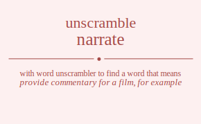

The word found after unscrambling narrate means that provide commentary for a film, for example, narrate or give a detailed account of, .

The word found after unscrambling narrate means that provide commentary for a film, for example, narrate or give a detailed account of, .
You can also find solutions for different combinations of letters in narrate like narrate narraet narrtae narrtea narreat narreta nararte nararet naratre narater naraert naraetr nartrae nartrea nartare nartaer nartera nartear narerat narerta nareart nareatr naretra naretar narrate narraet narrtae narrtea narreat narreta nararte nararet naratre narater naraert naraetr nartrae nartrea nartare nartaer nartera nartear narerat narerta nareart nareatr naretra naretar naarrte naarret naartre naarter naarert naaretr naarrte naarret naartre naarter naarert naaretr naatrre naatrer naatrre naatrer naaterr naaterr naaerrt naaertr naaerrt naaertr naaetrr naaetrr natrrae natrrea natrare natraer natrera natrear natrrae natrrea natrare natraer natrera natrear natarre natarer natarre natarer nataerr nataerr naterra naterar naterra naterar natearr natearr naerrat naerrta naerart naeratr naertra naertar naerrat naerrta naerart naeratr naertra naertar naearrt naeartr naearrt naeartr naeatrr naeatrr naetrra naetrar naetrra naetrar naetarr naetarr nrarate nraraet nrartae nrartea nrareat nrareta nraarte nraaret nraatre nraater nraaert nraaetr nratrae nratrea nratare nrataer nratera nratear nraerat nraerta nraeart nraeatr nraetra nraetar nrraate nrraaet nrratae nrratea nrraeat nrraeta nrraate nrraaet nrratae nrratea nrraeat nrraeta nrrtaae nrrtaea nrrtaae nrrtaea nrrteaa nrrteaa nrreaat nrreata nrreaat nrreata nrretaa nrretaa nraarte nraaret nraatre nraater nraaert nraaetr nrarate nraraet nrartae nrartea nrareat nrareta nratare nrataer nratrae nratrea nratear nratera nraeart nraeatr nraerat nraerta nraetar nraetra nrtarae nrtarea nrtaare nrtaaer nrtaera nrtaear nrtraae nrtraea nrtraae nrtraea nrtreaa nrtreaa nrtaare nrtaaer nrtarae nrtarea nrtaear nrtaera nrteara nrteaar nrteraa nrteraa nrteaar nrteara nrearat nrearta nreaart nreaatr nreatra nreatar nreraat nrerata nreraat nrerata nrertaa nrertaa nreaart nreaatr nrearat nrearta nreatar nreatra nretara nretaar nretraa nretraa nretaar nretara nrarate nraraet nrartae nrartea nrareat nrareta nraarte nraaret nraatre nraater nraaert nraaetr nratrae nratrea nratare nrataer nratera nratear nraerat nraerta nraeart nraeatr nraetra nraetar nrraate nrraaet nrratae nrratea nrraeat nrraeta nrraate nrraaet nrratae nrratea nrraeat nrraeta nrrtaae nrrtaea nrrtaae nrrtaea nrrteaa nrrteaa nrreaat nrreata nrreaat nrreata nrretaa nrretaa nraarte nraaret nraatre nraater nraaert nraaetr nrarate nraraet nrartae nrartea nrareat nrareta nratare nrataer nratrae nratrea nratear nratera nraeart nraeatr nraerat nraerta nraetar nraetra nrtarae nrtarea nrtaare nrtaaer nrtaera nrtaear nrtraae nrtraea nrtraae nrtraea nrtreaa nrtreaa nrtaare nrtaaer nrtarae nrtarea nrtaear nrtaera nrteara nrteaar nrteraa nrteraa nrteaar nrteara nrearat nrearta nreaart nreaatr nreatra nreatar nreraat nrerata nreraat nrerata nrertaa nrertaa nreaart nreaatr nrearat nrearta nreatar nreatra nretara nretaar nretraa nretraa nretaar nretara naarrte naarret naartre naarter naarert naaretr naarrte naarret naartre naarter naarert naaretr naatrre naatrer naatrre naatrer naaterr naaterr naaerrt naaertr naaerrt naaertr naaetrr naaetrr nararte nararet naratre narater naraert naraetr narrate narraet narrtae narrtea narreat narreta nartare nartaer nartrae nartrea nartear nartera nareart nareatr narerat narerta naretar naretra nararte nararet naratre narater naraert naraetr narrate narraet narrtae narrtea narreat narreta nartare nartaer nartrae nartrea nartear nartera nareart nareatr narerat narerta naretar naretra natarre natarer natarre natarer nataerr nataerr natrare natraer natrrae natrrea natrear natrera natrare natraer natrrae natrrea natrear natrera natearr natearr naterar naterra naterar naterra naearrt naeartr naearrt naeartr naeatrr naeatrr naerart naeratr naerrat naerrta naertar naertra naerart naeratr naerrat naerrta naertar naertra naetarr naetarr naetrar naetrra naetrar naetrra ntarrae ntarrea ntarare ntaraer ntarera ntarear ntarrae ntarrea ntarare ntaraer ntarera ntarear ntaarre ntaarer ntaarre ntaarer ntaaerr ntaaerr ntaerra ntaerar ntaerra ntaerar ntaearr ntaearr ntrarae ntrarea ntraare ntraaer ntraera ntraear ntrraae ntrraea ntrraae ntrraea ntrreaa ntrreaa ntraare ntraaer ntrarae ntrarea ntraear ntraera ntreara ntreaar ntreraa ntreraa ntreaar ntreara ntrarae ntrarea ntraare ntraaer ntraera ntraear ntrraae ntrraea ntrraae ntrraea ntrreaa ntrreaa ntraare ntraaer ntrarae ntrarea ntraear ntraera ntreara ntreaar ntreraa ntreraa ntreaar ntreara ntaarre ntaarer ntaarre ntaarer ntaaerr ntaaerr ntarare ntaraer ntarrae ntarrea ntarear ntarera ntarare ntaraer ntarrae ntarrea ntarear ntarera ntaearr ntaearr ntaerar ntaerra ntaerar ntaerra ntearra ntearar ntearra ntearar nteaarr nteaarr nterara nteraar nterraa nterraa nteraar nterara nterara nteraar nterraa nterraa nteraar nterara nteaarr nteaarr ntearar ntearra ntearar ntearra nearrat nearrta nearart nearatr neartra neartar nearrat nearrta nearart nearatr neartra neartar neaarrt neaartr neaarrt neaartr neaatrr neaatrr neatrra neatrar neatrra neatrar neatarr neatarr nerarat nerarta neraart neraatr neratra neratar nerraat nerrata nerraat nerrata nerrtaa nerrtaa neraart neraatr nerarat nerarta neratar neratra nertara nertaar nertraa nertraa nertaar nertara nerarat nerarta neraart neraatr neratra neratar nerraat nerrata nerraat nerrata nerrtaa nerrtaa neraart neraatr nerarat nerarta neratar neratra nertara nertaar nertraa nertraa nertaar nertara neaarrt neaartr neaarrt neaartr neaatrr neaatrr nearart nearatr nearrat nearrta neartar neartra nearart nearatr nearrat nearrta neartar neartra neatarr neatarr neatrar neatrra neatrar neatrra netarra netarar netarra netarar netaarr netaarr netrara netraar netrraa netrraa netraar netrara netrara netraar netrraa netrraa netraar netrara netaarr netaarr netarar netarra netarar netarra anrrate anrraet anrrtae anrrtea anrreat anrreta anrarte anraret anratre anrater anraert anraetr anrtrae anrtrea anrtare anrtaer anrtera anrtear anrerat anrerta anreart anreatr anretra anretar anrrate anrraet anrrtae anrrtea anrreat anrreta anrarte anraret anratre anrater anraert anraetr anrtrae anrtrea anrtare anrtaer anrtera anrtear anrerat anrerta anreart anreatr anretra anretar anarrte anarret anartre anarter anarert anaretr anarrte anarret anartre anarter anarert anaretr anatrre anatrer anatrre anatrer anaterr anaterr anaerrt anaertr anaerrt anaertr anaetrr anaetrr antrrae antrrea antrare antraer antrera antrear antrrae antrrea antrare antraer antrera antrear antarre antarer antarre antarer antaerr antaerr anterra anterar anterra anterar antearr antearr anerrat anerrta anerart aneratr anertra anertar anerrat anerrta anerart aneratr anertra anertar anearrt aneartr anearrt aneartr aneatrr aneatrr anetrra anetrar anetrra anetrar anetarr anetarr arnrate arnraet arnrtae arnrtea arnreat arnreta arnarte arnaret arnatre arnater arnaert arnaetr arntrae arntrea arntare arntaer arntera arntear arnerat arnerta arneart arneatr arnetra arnetar arrnate arrnaet arrntae arrntea arrneat arrneta arrante arranet arratne arraten arraent arraetn arrtnae arrtnea arrtane arrtaen arrtena arrtean arrenat arrenta arreant arreatn arretna arretan aranrte aranret arantre aranter aranert aranetr ararnte ararnet arartne ararten ararent araretn aratnre aratner aratrne aratren aratenr aratern araenrt araentr araernt araertn araetnr araetrn artnrae artnrea artnare artnaer artnera artnear artrnae artrnea artrane artraen artrena artrean artanre artaner artarne artaren artaenr artaern artenra artenar arterna arteran arteanr artearn arenrat arenrta arenart arenatr arentra arentar arernat arernta arerant areratn arertna arertan areanrt areantr arearnt areartn areatnr areatrn aretnra aretnar aretrna aretran aretanr aretarn arnrate arnraet arnrtae arnrtea arnreat arnreta arnarte arnaret arnatre arnater arnaert arnaetr arntrae arntrea arntare arntaer arntera arntear arnerat arnerta arneart arneatr arnetra arnetar arrnate arrnaet arrntae arrntea arrneat arrneta arrante arranet arratne arraten arraent arraetn arrtnae arrtnea arrtane arrtaen arrtena arrtean arrenat arrenta arreant arreatn arretna arretan aranrte aranret arantre aranter aranert aranetr ararnte ararnet arartne ararten ararent araretn aratnre aratner aratrne aratren aratenr aratern araenrt araentr araernt araertn araetnr araetrn artnrae artnrea artnare artnaer artnera artnear artrnae artrnea artrane artraen artrena artrean artanre artaner artarne artaren artaenr artaern artenra artenar arterna arteran arteanr artearn arenrat arenrta arenart arenatr arentra arentar arernat arernta arerant areratn arertna arertan areanrt areantr arearnt areartn areatnr areatrn aretnra aretnar aretrna aretran aretanr aretarn aanrrte aanrret aanrtre aanrter aanrert aanretr aanrrte aanrret aanrtre aanrter aanrert aanretr aantrre aantrer aantrre aantrer aanterr aanterr aanerrt aanertr aanerrt aanertr aanetrr aanetrr aarnrte aarnret aarntre aarnter aarnert aarnetr aarrnte aarrnet aarrtne aarrten aarrent aarretn aartnre aartner aartrne aartren aartenr aartern aarenrt aarentr aarernt aarertn aaretnr aaretrn aarnrte aarnret aarntre aarnter aarnert aarnetr aarrnte aarrnet aarrtne aarrten aarrent aarretn aartnre aartner aartrne aartren aartenr aartern aarenrt aarentr aarernt aarertn aaretnr aaretrn aatnrre aatnrer aatnrre aatnrer aatnerr aatnerr aatrnre aatrner aatrrne aatrren aatrenr aatrern aatrnre aatrner aatrrne aatrren aatrenr aatrern aatenrr aatenrr aaternr aaterrn aaternr aaterrn aaenrrt aaenrtr aaenrrt aaenrtr aaentrr aaentrr aaernrt aaerntr aaerrnt aaerrtn aaertnr aaertrn aaernrt aaerntr aaerrnt aaerrtn aaertnr aaertrn aaetnrr aaetnrr aaetrnr aaetrrn aaetrnr aaetrrn atnrrae atnrrea atnrare atnraer atnrera atnrear atnrrae atnrrea atnrare atnraer atnrera atnrear atnarre atnarer atnarre atnarer atnaerr atnaerr atnerra atnerar atnerra atnerar atnearr atnearr atrnrae atrnrea atrnare atrnaer atrnera atrnear atrrnae atrrnea atrrane atrraen atrrena atrrean atranre atraner atrarne atraren atraenr atraern atrenra atrenar atrerna atreran atreanr atrearn atrnrae atrnrea atrnare atrnaer atrnera atrnear atrrnae atrrnea atrrane atrraen atrrena atrrean atranre atraner atrarne atraren atraenr atraern atrenra atrenar atrerna atreran atreanr atrearn atanrre atanrer atanrre atanrer atanerr atanerr atarnre atarner atarrne atarren atarenr atarern atarnre atarner atarrne atarren atarenr atarern ataenrr ataenrr ataernr ataerrn ataernr ataerrn atenrra atenrar atenrra atenrar atenarr atenarr aternra aternar aterrna aterran ateranr aterarn aternra aternar aterrna aterran ateranr aterarn ateanrr ateanrr atearnr atearrn atearnr atearrn aenrrat aenrrta aenrart aenratr aenrtra aenrtar aenrrat aenrrta aenrart aenratr aenrtra aenrtar aenarrt aenartr aenarrt aenartr aenatrr aenatrr aentrra aentrar aentrra aentrar aentarr aentarr aernrat aernrta aernart aernatr aerntra aerntar aerrnat aerrnta aerrant aerratn aerrtna aerrtan aeranrt aerantr aerarnt aerartn aeratnr aeratrn aertnra aertnar aertrna aertran aertanr aertarn aernrat aernrta aernart aernatr aerntra aerntar aerrnat aerrnta aerrant aerratn aerrtna aerrtan aeranrt aerantr aerarnt aerartn aeratnr aeratrn aertnra aertnar aertrna aertran aertanr aertarn aeanrrt aeanrtr aeanrrt aeanrtr aeantrr aeantrr aearnrt aearntr aearrnt aearrtn aeartnr aeartrn aearnrt aearntr aearrnt aearrtn aeartnr aeartrn aeatnrr aeatnrr aeatrnr aeatrrn aeatrnr aeatrrn aetnrra aetnrar aetnrra aetnrar aetnarr aetnarr aetrnra aetrnar aetrrna aetrran aetranr aetrarn aetrnra aetrnar aetrrna aetrran aetranr aetrarn aetanrr aetanrr aetarnr aetarrn aetarnr aetarrn rnarate rnaraet rnartae rnartea rnareat rnareta rnaarte rnaaret rnaatre rnaater rnaaert rnaaetr rnatrae rnatrea rnatare rnataer rnatera rnatear rnaerat rnaerta rnaeart rnaeatr rnaetra rnaetar rnraate rnraaet rnratae rnratea rnraeat rnraeta rnraate rnraaet rnratae rnratea rnraeat rnraeta rnrtaae rnrtaea rnrtaae rnrtaea rnrteaa rnrteaa rnreaat rnreata rnreaat rnreata rnretaa rnretaa rnaarte rnaaret rnaatre rnaater rnaaert rnaaetr rnarate rnaraet rnartae rnartea rnareat rnareta rnatare rnataer rnatrae rnatrea rnatear rnatera rnaeart rnaeatr rnaerat rnaerta rnaetar rnaetra rntarae rntarea rntaare rntaaer rntaera rntaear rntraae rntraea rntraae rntraea rntreaa rntreaa rntaare rntaaer rntarae rntarea rntaear rntaera rnteara rnteaar rnteraa rnteraa rnteaar rnteara rnearat rnearta rneaart rneaatr rneatra rneatar rneraat rnerata rneraat rnerata rnertaa rnertaa rneaart rneaatr rnearat rnearta rneatar rneatra rnetara rnetaar rnetraa rnetraa rnetaar rnetara ranrate ranraet ranrtae ranrtea ranreat ranreta ranarte ranaret ranatre ranater ranaert ranaetr rantrae rantrea rantare rantaer rantera rantear ranerat ranerta raneart raneatr ranetra ranetar rarnate rarnaet rarntae rarntea rarneat rarneta rarante raranet raratne raraten raraent raraetn rartnae rartnea rartane rartaen rartena rartean rarenat rarenta rareant rareatn raretna raretan raanrte raanret raantre raanter raanert raanetr raarnte raarnet raartne raarten raarent raaretn raatnre raatner raatrne raatren raatenr raatern raaenrt raaentr raaernt raaertn raaetnr raaetrn ratnrae ratnrea ratnare ratnaer ratnera ratnear ratrnae ratrnea ratrane ratraen ratrena ratrean ratanre rataner ratarne rataren rataenr rataern ratenra ratenar raterna rateran rateanr ratearn raenrat raenrta raenart raenatr raentra raentar raernat raernta raerant raeratn raertna raertan raeanrt raeantr raearnt raeartn raeatnr raeatrn raetnra raetnar raetrna raetran raetanr raetarn rrnaate rrnaaet rrnatae rrnatea rrnaeat rrnaeta rrnaate rrnaaet rrnatae rrnatea rrnaeat rrnaeta rrntaae rrntaea rrntaae rrntaea rrnteaa rrnteaa rrneaat rrneata rrneaat rrneata rrnetaa rrnetaa rranate rranaet rrantae rrantea rraneat rraneta rraante rraanet rraatne rraaten rraaent rraaetn rratnae rratnea rratane rrataen rratena rratean rraenat rraenta rraeant rraeatn rraetna rraetan rranate rranaet rrantae rrantea rraneat rraneta rraante rraanet rraatne rraaten rraaent rraaetn rratnae rratnea rratane rrataen rratena rratean rraenat rraenta rraeant rraeatn rraetna rraetan rrtnaae rrtnaea rrtnaae rrtnaea rrtneaa rrtneaa rrtanae rrtanea rrtaane rrtaaen rrtaena rrtaean rrtanae rrtanea rrtaane rrtaaen rrtaena rrtaean rrtenaa rrtenaa rrteana rrteaan rrteana rrteaan rrenaat rrenata rrenaat rrenata rrentaa rrentaa rreanat rreanta rreaant rreaatn rreatna rreatan rreanat rreanta rreaant rreaatn rreatna rreatan rretnaa rretnaa rretana rretaan rretana rretaan ranarte ranaret ranatre ranater ranaert ranaetr ranrate ranraet ranrtae ranrtea ranreat ranreta rantare rantaer rantrae rantrea rantear rantera raneart raneatr ranerat ranerta ranetar ranetra raanrte raanret raantre raanter raanert raanetr raarnte raarnet raartne raarten raarent raaretn raatnre raatner raatrne raatren raatenr raatern raaenrt raaentr raaernt raaertn raaetnr raaetrn rarnate rarnaet rarntae rarntea rarneat rarneta rarante raranet raratne raraten raraent raraetn rartnae rartnea rartane rartaen rartena rartean rarenat rarenta rareant rareatn raretna raretan ratnare ratnaer ratnrae ratnrea ratnear ratnera ratanre rataner ratarne rataren rataenr rataern ratrnae ratrnea ratrane ratraen ratrena ratrean ratenar ratenra rateanr ratearn raterna rateran raenart raenatr raenrat raenrta raentar raentra raeanrt raeantr raearnt raeartn raeatnr raeatrn raernat raernta raerant raeratn raertna raertan raetnar raetnra raetanr raetarn raetrna raetran rtnarae rtnarea rtnaare rtnaaer rtnaera rtnaear rtnraae rtnraea rtnraae rtnraea rtnreaa rtnreaa rtnaare rtnaaer rtnarae rtnarea rtnaear rtnaera rtneara rtneaar rtneraa rtneraa rtneaar rtneara rtanrae rtanrea rtanare rtanaer rtanera rtanear rtarnae rtarnea rtarane rtaraen rtarena rtarean rtaanre rtaaner rtaarne rtaaren rtaaenr rtaaern rtaenra rtaenar rtaerna rtaeran rtaeanr rtaearn rtrnaae rtrnaea rtrnaae rtrnaea rtrneaa rtrneaa rtranae rtranea rtraane rtraaen rtraena rtraean rtranae rtranea rtraane rtraaen rtraena rtraean rtrenaa rtrenaa rtreana rtreaan rtreana rtreaan rtanare rtanaer rtanrae rtanrea rtanear rtanera rtaanre rtaaner rtaarne rtaaren rtaaenr rtaaern rtarnae rtarnea rtarane rtaraen rtarena rtarean rtaenar rtaenra rtaeanr rtaearn rtaerna rtaeran rtenara rtenaar rtenraa rtenraa rtenaar rtenara rteanra rteanar rtearna rtearan rteaanr rteaarn rternaa rternaa rterana rteraan rterana rteraan rteanar rteanra rteaanr rteaarn rtearna rtearan renarat renarta renaart renaatr renatra renatar renraat renrata renraat renrata renrtaa renrtaa renaart renaatr renarat renarta renatar renatra rentara rentaar rentraa rentraa rentaar rentara reanrat reanrta reanart reanatr reantra reantar rearnat rearnta rearant rearatn reartna reartan reaanrt reaantr reaarnt reaartn reaatnr reaatrn reatnra reatnar reatrna reatran reatanr reatarn rernaat rernata rernaat rernata rerntaa rerntaa reranat reranta reraant reraatn reratna reratan reranat reranta reraant reraatn reratna reratan rertnaa rertnaa rertana rertaan rertana rertaan reanart reanatr reanrat reanrta reantar reantra reaanrt reaantr reaarnt reaartn reaatnr reaatrn rearnat rearnta rearant rearatn reartna reartan reatnar reatnra reatanr reatarn reatrna reatran retnara retnaar retnraa retnraa retnaar retnara retanra retanar retarna retaran retaanr retaarn retrnaa retrnaa retrana retraan retrana retraan retanar retanra retaanr retaarn retarna retaran rnarate rnaraet rnartae rnartea rnareat rnareta rnaarte rnaaret rnaatre rnaater rnaaert rnaaetr rnatrae rnatrea rnatare rnataer rnatera rnatear rnaerat rnaerta rnaeart rnaeatr rnaetra rnaetar rnraate rnraaet rnratae rnratea rnraeat rnraeta rnraate rnraaet rnratae rnratea rnraeat rnraeta rnrtaae rnrtaea rnrtaae rnrtaea rnrteaa rnrteaa rnreaat rnreata rnreaat rnreata rnretaa rnretaa rnaarte rnaaret rnaatre rnaater rnaaert rnaaetr rnarate rnaraet rnartae rnartea rnareat rnareta rnatare rnataer rnatrae rnatrea rnatear rnatera rnaeart rnaeatr rnaerat rnaerta rnaetar rnaetra rntarae rntarea rntaare rntaaer rntaera rntaear rntraae rntraea rntraae rntraea rntreaa rntreaa rntaare rntaaer rntarae rntarea rntaear rntaera rnteara rnteaar rnteraa rnteraa rnteaar rnteara rnearat rnearta rneaart rneaatr rneatra rneatar rneraat rnerata rneraat rnerata rnertaa rnertaa rneaart rneaatr rnearat rnearta rneatar rneatra rnetara rnetaar rnetraa rnetraa rnetaar rnetara ranrate ranraet ranrtae ranrtea ranreat ranreta ranarte ranaret ranatre ranater ranaert ranaetr rantrae rantrea rantare rantaer rantera rantear ranerat ranerta raneart raneatr ranetra ranetar rarnate rarnaet rarntae rarntea rarneat rarneta rarante raranet raratne raraten raraent raraetn rartnae rartnea rartane rartaen rartena rartean rarenat rarenta rareant rareatn raretna raretan raanrte raanret raantre raanter raanert raanetr raarnte raarnet raartne raarten raarent raaretn raatnre raatner raatrne raatren raatenr raatern raaenrt raaentr raaernt raaertn raaetnr raaetrn ratnrae ratnrea ratnare ratnaer ratnera ratnear ratrnae ratrnea ratrane ratraen ratrena ratrean ratanre rataner ratarne rataren rataenr rataern ratenra ratenar raterna rateran rateanr ratearn raenrat raenrta raenart raenatr raentra raentar raernat raernta raerant raeratn raertna raertan raeanrt raeantr raearnt raeartn raeatnr raeatrn raetnra raetnar raetrna raetran raetanr raetarn rrnaate rrnaaet rrnatae rrnatea rrnaeat rrnaeta rrnaate rrnaaet rrnatae rrnatea rrnaeat rrnaeta rrntaae rrntaea rrntaae rrntaea rrnteaa rrnteaa rrneaat rrneata rrneaat rrneata rrnetaa rrnetaa rranate rranaet rrantae rrantea rraneat rraneta rraante rraanet rraatne rraaten rraaent rraaetn rratnae rratnea rratane rrataen rratena rratean rraenat rraenta rraeant rraeatn rraetna rraetan rranate rranaet rrantae rrantea rraneat rraneta rraante rraanet rraatne rraaten rraaent rraaetn rratnae rratnea rratane rrataen rratena rratean rraenat rraenta rraeant rraeatn rraetna rraetan rrtnaae rrtnaea rrtnaae rrtnaea rrtneaa rrtneaa rrtanae rrtanea rrtaane rrtaaen rrtaena rrtaean rrtanae rrtanea rrtaane rrtaaen rrtaena rrtaean rrtenaa rrtenaa rrteana rrteaan rrteana rrteaan rrenaat rrenata rrenaat rrenata rrentaa rrentaa rreanat rreanta rreaant rreaatn rreatna rreatan rreanat rreanta rreaant rreaatn rreatna rreatan rretnaa rretnaa rretana rretaan rretana rretaan ranarte ranaret ranatre ranater ranaert ranaetr ranrate ranraet ranrtae ranrtea ranreat ranreta rantare rantaer rantrae rantrea rantear rantera raneart raneatr ranerat ranerta ranetar ranetra raanrte raanret raantre raanter raanert raanetr raarnte raarnet raartne raarten raarent raaretn raatnre raatner raatrne raatren raatenr raatern raaenrt raaentr raaernt raaertn raaetnr raaetrn rarnate rarnaet rarntae rarntea rarneat rarneta rarante raranet raratne raraten raraent raraetn rartnae rartnea rartane rartaen rartena rartean rarenat rarenta rareant rareatn raretna raretan ratnare ratnaer ratnrae ratnrea ratnear ratnera ratanre rataner ratarne rataren rataenr rataern ratrnae ratrnea ratrane ratraen ratrena ratrean ratenar ratenra rateanr ratearn raterna rateran raenart raenatr raenrat raenrta raentar raentra raeanrt raeantr raearnt raeartn raeatnr raeatrn raernat raernta raerant raeratn raertna raertan raetnar raetnra raetanr raetarn raetrna raetran rtnarae rtnarea rtnaare rtnaaer rtnaera rtnaear rtnraae rtnraea rtnraae rtnraea rtnreaa rtnreaa rtnaare rtnaaer rtnarae rtnarea rtnaear rtnaera rtneara rtneaar rtneraa rtneraa rtneaar rtneara rtanrae rtanrea rtanare rtanaer rtanera rtanear rtarnae rtarnea rtarane rtaraen rtarena rtarean rtaanre rtaaner rtaarne rtaaren rtaaenr rtaaern rtaenra rtaenar rtaerna rtaeran rtaeanr rtaearn rtrnaae rtrnaea rtrnaae rtrnaea rtrneaa rtrneaa rtranae rtranea rtraane rtraaen rtraena rtraean rtranae rtranea rtraane rtraaen rtraena rtraean rtrenaa rtrenaa rtreana rtreaan rtreana rtreaan rtanare rtanaer rtanrae rtanrea rtanear rtanera rtaanre rtaaner rtaarne rtaaren rtaaenr rtaaern rtarnae rtarnea rtarane rtaraen rtarena rtarean rtaenar rtaenra rtaeanr rtaearn rtaerna rtaeran rtenara rtenaar rtenraa rtenraa rtenaar rtenara rteanra rteanar rtearna rtearan rteaanr rteaarn rternaa rternaa rterana rteraan rterana rteraan rteanar rteanra rteaanr rteaarn rtearna rtearan renarat renarta renaart renaatr renatra renatar renraat renrata renraat renrata renrtaa renrtaa renaart renaatr renarat renarta renatar renatra rentara rentaar rentraa rentraa rentaar rentara reanrat reanrta reanart reanatr reantra reantar rearnat rearnta rearant rearatn reartna reartan reaanrt reaantr reaarnt reaartn reaatnr reaatrn reatnra reatnar reatrna reatran reatanr reatarn rernaat rernata rernaat rernata rerntaa rerntaa reranat reranta reraant reraatn reratna reratan reranat reranta reraant reraatn reratna reratan rertnaa rertnaa rertana rertaan rertana rertaan reanart reanatr reanrat reanrta reantar reantra reaanrt reaantr reaarnt reaartn reaatnr reaatrn rearnat rearnta rearant rearatn reartna reartan reatnar reatnra reatanr reatarn reatrna reatran retnara retnaar retnraa retnraa retnaar retnara retanra retanar retarna retaran retaanr retaarn retrnaa retrnaa retrana retraan retrana retraan retanar retanra retaanr retaarn retarna retaran anarrte anarret anartre anarter anarert anaretr anarrte anarret anartre anarter anarert anaretr anatrre anatrer anatrre anatrer anaterr anaterr anaerrt anaertr anaerrt anaertr anaetrr anaetrr anrarte anraret anratre anrater anraert anraetr anrrate anrraet anrrtae anrrtea anrreat anrreta anrtare anrtaer anrtrae anrtrea anrtear anrtera anreart anreatr anrerat anrerta anretar anretra anrarte anraret anratre anrater anraert anraetr anrrate anrraet anrrtae anrrtea anrreat anrreta anrtare anrtaer anrtrae anrtrea anrtear anrtera anreart anreatr anrerat anrerta anretar anretra antarre antarer antarre antarer antaerr antaerr antrare antraer antrrae antrrea antrear antrera antrare antraer antrrae antrrea antrear antrera antearr antearr anterar anterra anterar anterra anearrt aneartr anearrt aneartr aneatrr aneatrr anerart aneratr anerrat anerrta anertar anertra anerart aneratr anerrat anerrta anertar anertra anetarr anetarr anetrar anetrra anetrar anetrra aanrrte aanrret aanrtre aanrter aanrert aanretr aanrrte aanrret aanrtre aanrter aanrert aanretr aantrre aantrer aantrre aantrer aanterr aanterr aanerrt aanertr aanerrt aanertr aanetrr aanetrr aarnrte aarnret aarntre aarnter aarnert aarnetr aarrnte aarrnet aarrtne aarrten aarrent aarretn aartnre aartner aartrne aartren aartenr aartern aarenrt aarentr aarernt aarertn aaretnr aaretrn aarnrte aarnret aarntre aarnter aarnert aarnetr aarrnte aarrnet aarrtne aarrten aarrent aarretn aartnre aartner aartrne aartren aartenr aartern aarenrt aarentr aarernt aarertn aaretnr aaretrn aatnrre aatnrer aatnrre aatnrer aatnerr aatnerr aatrnre aatrner aatrrne aatrren aatrenr aatrern aatrnre aatrner aatrrne aatrren aatrenr aatrern aatenrr aatenrr aaternr aaterrn aaternr aaterrn aaenrrt aaenrtr aaenrrt aaenrtr aaentrr aaentrr aaernrt aaerntr aaerrnt aaerrtn aaertnr aaertrn aaernrt aaerntr aaerrnt aaerrtn aaertnr aaertrn aaetnrr aaetnrr aaetrnr aaetrrn aaetrnr aaetrrn arnarte arnaret arnatre arnater arnaert arnaetr arnrate arnraet arnrtae arnrtea arnreat arnreta arntare arntaer arntrae arntrea arntear arntera arneart arneatr arnerat arnerta arnetar arnetra aranrte aranret arantre aranter aranert aranetr ararnte ararnet arartne ararten ararent araretn aratnre aratner aratrne aratren aratenr aratern araenrt araentr araernt araertn araetnr araetrn arrnate arrnaet arrntae arrntea arrneat arrneta arrante arranet arratne arraten arraent arraetn arrtnae arrtnea arrtane arrtaen arrtena arrtean arrenat arrenta arreant arreatn arretna arretan artnare artnaer artnrae artnrea artnear artnera artanre artaner artarne artaren artaenr artaern artrnae artrnea artrane artraen artrena artrean artenar artenra arteanr artearn arterna arteran arenart arenatr arenrat arenrta arentar arentra areanrt areantr arearnt areartn areatnr areatrn arernat arernta arerant areratn arertna arertan aretnar aretnra aretanr aretarn aretrna aretran arnarte arnaret arnatre arnater arnaert arnaetr arnrate arnraet arnrtae arnrtea arnreat arnreta arntare arntaer arntrae arntrea arntear arntera arneart arneatr arnerat arnerta arnetar arnetra aranrte aranret arantre aranter aranert aranetr ararnte ararnet arartne ararten ararent araretn aratnre aratner aratrne aratren aratenr aratern araenrt araentr araernt araertn araetnr araetrn arrnate arrnaet arrntae arrntea arrneat arrneta arrante arranet arratne arraten arraent arraetn arrtnae arrtnea arrtane arrtaen arrtena arrtean arrenat arrenta arreant arreatn arretna arretan artnare artnaer artnrae artnrea artnear artnera artanre artaner artarne artaren artaenr artaern artrnae artrnea artrane artraen artrena artrean artenar artenra arteanr artearn arterna arteran arenart arenatr arenrat arenrta arentar arentra areanrt areantr arearnt areartn areatnr areatrn arernat arernta arerant areratn arertna arertan aretnar aretnra aretanr aretarn aretrna aretran atnarre atnarer atnarre atnarer atnaerr atnaerr atnrare atnraer atnrrae atnrrea atnrear atnrera atnrare atnraer atnrrae atnrrea atnrear atnrera atnearr atnearr atnerar atnerra atnerar atnerra atanrre atanrer atanrre atanrer atanerr atanerr atarnre atarner atarrne atarren atarenr atarern atarnre atarner atarrne atarren atarenr atarern ataenrr ataenrr ataernr ataerrn ataernr ataerrn atrnare atrnaer atrnrae atrnrea atrnear atrnera atranre atraner atrarne atraren atraenr atraern atrrnae atrrnea atrrane atrraen atrrena atrrean atrenar atrenra atreanr atrearn atrerna atreran atrnare atrnaer atrnrae atrnrea atrnear atrnera atranre atraner atrarne atraren atraenr atraern atrrnae atrrnea atrrane atrraen atrrena atrrean atrenar atrenra atreanr atrearn atrerna atreran atenarr atenarr atenrar atenrra atenrar atenrra ateanrr ateanrr atearnr atearrn atearnr atearrn aternar aternra ateranr aterarn aterrna aterran aternar aternra ateranr aterarn aterrna aterran aenarrt aenartr aenarrt aenartr aenatrr aenatrr aenrart aenratr aenrrat aenrrta aenrtar aenrtra aenrart aenratr aenrrat aenrrta aenrtar aenrtra aentarr aentarr aentrar aentrra aentrar aentrra aeanrrt aeanrtr aeanrrt aeanrtr aeantrr aeantrr aearnrt aearntr aearrnt aearrtn aeartnr aeartrn aearnrt aearntr aearrnt aearrtn aeartnr aeartrn aeatnrr aeatnrr aeatrnr aeatrrn aeatrnr aeatrrn aernart aernatr aernrat aernrta aerntar aerntra aeranrt aerantr aerarnt aerartn aeratnr aeratrn aerrnat aerrnta aerrant aerratn aerrtna aerrtan aertnar aertnra aertanr aertarn aertrna aertran aernart aernatr aernrat aernrta aerntar aerntra aeranrt aerantr aerarnt aerartn aeratnr aeratrn aerrnat aerrnta aerrant aerratn aerrtna aerrtan aertnar aertnra aertanr aertarn aertrna aertran aetnarr aetnarr aetnrar aetnrra aetnrar aetnrra aetanrr aetanrr aetarnr aetarrn aetarnr aetarrn aetrnar aetrnra aetranr aetrarn aetrrna aetrran aetrnar aetrnra aetranr aetrarn aetrrna aetrran tnarrae tnarrea tnarare tnaraer tnarera tnarear tnarrae tnarrea tnarare tnaraer tnarera tnarear tnaarre tnaarer tnaarre tnaarer tnaaerr tnaaerr tnaerra tnaerar tnaerra tnaerar tnaearr tnaearr tnrarae tnrarea tnraare tnraaer tnraera tnraear tnrraae tnrraea tnrraae tnrraea tnrreaa tnrreaa tnraare tnraaer tnrarae tnrarea tnraear tnraera tnreara tnreaar tnreraa tnreraa tnreaar tnreara tnrarae tnrarea tnraare tnraaer tnraera tnraear tnrraae tnrraea tnrraae tnrraea tnrreaa tnrreaa tnraare tnraaer tnrarae tnrarea tnraear tnraera tnreara tnreaar tnreraa tnreraa tnreaar tnreara tnaarre tnaarer tnaarre tnaarer tnaaerr tnaaerr tnarare tnaraer tnarrae tnarrea tnarear tnarera tnarare tnaraer tnarrae tnarrea tnarear tnarera tnaearr tnaearr tnaerar tnaerra tnaerar tnaerra tnearra tnearar tnearra tnearar tneaarr tneaarr tnerara tneraar tnerraa tnerraa tneraar tnerara tnerara tneraar tnerraa tnerraa tneraar tnerara tneaarr tneaarr tnearar tnearra tnearar tnearra tanrrae tanrrea tanrare tanraer tanrera tanrear tanrrae tanrrea tanrare tanraer tanrera tanrear tanarre tanarer tanarre tanarer tanaerr tanaerr tanerra tanerar tanerra tanerar tanearr tanearr tarnrae tarnrea tarnare tarnaer tarnera tarnear tarrnae tarrnea tarrane tarraen tarrena tarrean taranre taraner tararne tararen taraenr taraern tarenra tarenar tarerna tareran tareanr tarearn tarnrae tarnrea tarnare tarnaer tarnera tarnear tarrnae tarrnea tarrane tarraen tarrena tarrean taranre taraner tararne tararen taraenr taraern tarenra tarenar tarerna tareran tareanr tarearn taanrre taanrer taanrre taanrer taanerr taanerr taarnre taarner taarrne taarren taarenr taarern taarnre taarner taarrne taarren taarenr taarern taaenrr taaenrr taaernr taaerrn taaernr taaerrn taenrra taenrar taenrra taenrar taenarr taenarr taernra taernar taerrna taerran taeranr taerarn taernra taernar taerrna taerran taeranr taerarn taeanrr taeanrr taearnr taearrn taearnr taearrn trnarae trnarea trnaare trnaaer trnaera trnaear trnraae trnraea trnraae trnraea trnreaa trnreaa trnaare trnaaer trnarae trnarea trnaear trnaera trneara trneaar trneraa trneraa trneaar trneara tranrae tranrea tranare tranaer tranera tranear trarnae trarnea trarane traraen trarena trarean traanre traaner traarne traaren traaenr traaern traenra traenar traerna traeran traeanr traearn trrnaae trrnaea trrnaae trrnaea trrneaa trrneaa trranae trranea trraane trraaen trraena trraean trranae trranea trraane trraaen trraena trraean trrenaa trrenaa trreana trreaan trreana trreaan tranare tranaer tranrae tranrea tranear tranera traanre traaner traarne traaren traaenr traaern trarnae trarnea trarane traraen trarena trarean traenar traenra traeanr traearn traerna traeran trenara trenaar trenraa trenraa trenaar trenara treanra treanar trearna trearan treaanr treaarn trernaa trernaa trerana treraan trerana treraan treanar treanra treaanr treaarn trearna trearan trnarae trnarea trnaare trnaaer trnaera trnaear trnraae trnraea trnraae trnraea trnreaa trnreaa trnaare trnaaer trnarae trnarea trnaear trnaera trneara trneaar trneraa trneraa trneaar trneara tranrae tranrea tranare tranaer tranera tranear trarnae trarnea trarane traraen trarena trarean traanre traaner traarne traaren traaenr traaern traenra traenar traerna traeran traeanr traearn trrnaae trrnaea trrnaae trrnaea trrneaa trrneaa trranae trranea trraane trraaen trraena trraean trranae trranea trraane trraaen trraena trraean trrenaa trrenaa trreana trreaan trreana trreaan tranare tranaer tranrae tranrea tranear tranera traanre traaner traarne traaren traaenr traaern trarnae trarnea trarane traraen trarena trarean traenar traenra traeanr traearn traerna traeran trenara trenaar trenraa trenraa trenaar trenara treanra treanar trearna trearan treaanr treaarn trernaa trernaa trerana treraan trerana treraan treanar treanra treaanr treaarn trearna trearan tanarre tanarer tanarre tanarer tanaerr tanaerr tanrare tanraer tanrrae tanrrea tanrear tanrera tanrare tanraer tanrrae tanrrea tanrear tanrera tanearr tanearr tanerar tanerra tanerar tanerra taanrre taanrer taanrre taanrer taanerr taanerr taarnre taarner taarrne taarren taarenr taarern taarnre taarner taarrne taarren taarenr taarern taaenrr taaenrr taaernr taaerrn taaernr taaerrn tarnare tarnaer tarnrae tarnrea tarnear tarnera taranre taraner tararne tararen taraenr taraern tarrnae tarrnea tarrane tarraen tarrena tarrean tarenar tarenra tareanr tarearn tarerna tareran tarnare tarnaer tarnrae tarnrea tarnear tarnera taranre taraner tararne tararen taraenr taraern tarrnae tarrnea tarrane tarraen tarrena tarrean tarenar tarenra tareanr tarearn tarerna tareran taenarr taenarr taenrar taenrra taenrar taenrra taeanrr taeanrr taearnr taearrn taearnr taearrn taernar taernra taeranr taerarn taerrna taerran taernar taernra taeranr taerarn taerrna taerran tenarra tenarar tenarra tenarar tenaarr tenaarr tenrara tenraar tenrraa tenrraa tenraar tenrara tenrara tenraar tenrraa tenrraa tenraar tenrara tenaarr tenaarr tenarar tenarra tenarar tenarra teanrra teanrar teanrra teanrar teanarr teanarr tearnra tearnar tearrna tearran tearanr teararn tearnra tearnar tearrna tearran tearanr teararn teaanrr teaanrr teaarnr teaarrn teaarnr teaarrn ternara ternaar ternraa ternraa ternaar ternara teranra teranar terarna teraran teraanr teraarn terrnaa terrnaa terrana terraan terrana terraan teranar teranra teraanr teraarn terarna teraran ternara ternaar ternraa ternraa ternaar ternara teranra teranar terarna teraran teraanr teraarn terrnaa terrnaa terrana terraan terrana terraan teranar teranra teraanr teraarn terarna teraran teanarr teanarr teanrar teanrra teanrar teanrra teaanrr teaanrr teaarnr teaarrn teaarnr teaarrn tearnar tearnra tearanr teararn tearrna tearran tearnar tearnra tearanr teararn tearrna tearran enarrat enarrta enarart enaratr enartra enartar enarrat enarrta enarart enaratr enartra enartar enaarrt enaartr enaarrt enaartr enaatrr enaatrr enatrra enatrar enatrra enatrar enatarr enatarr enrarat enrarta enraart enraatr enratra enratar enrraat enrrata enrraat enrrata enrrtaa enrrtaa enraart enraatr enrarat enrarta enratar enratra enrtara enrtaar enrtraa enrtraa enrtaar enrtara enrarat enrarta enraart enraatr enratra enratar enrraat enrrata enrraat enrrata enrrtaa enrrtaa enraart enraatr enrarat enrarta enratar enratra enrtara enrtaar enrtraa enrtraa enrtaar enrtara enaarrt enaartr enaarrt enaartr enaatrr enaatrr enarart enaratr enarrat enarrta enartar enartra enarart enaratr enarrat enarrta enartar enartra enatarr enatarr enatrar enatrra enatrar enatrra entarra entarar entarra entarar entaarr entaarr entrara entraar entrraa entrraa entraar entrara entrara entraar entrraa entrraa entraar entrara entaarr entaarr entarar entarra entarar entarra eanrrat eanrrta eanrart eanratr eanrtra eanrtar eanrrat eanrrta eanrart eanratr eanrtra eanrtar eanarrt eanartr eanarrt eanartr eanatrr eanatrr eantrra eantrar eantrra eantrar eantarr eantarr earnrat earnrta earnart earnatr earntra earntar earrnat earrnta earrant earratn earrtna earrtan earanrt earantr eararnt earartn earatnr earatrn eartnra eartnar eartrna eartran eartanr eartarn earnrat earnrta earnart earnatr earntra earntar earrnat earrnta earrant earratn earrtna earrtan earanrt earantr eararnt earartn earatnr earatrn eartnra eartnar eartrna eartran eartanr eartarn eaanrrt eaanrtr eaanrrt eaanrtr eaantrr eaantrr eaarnrt eaarntr eaarrnt eaarrtn eaartnr eaartrn eaarnrt eaarntr eaarrnt eaarrtn eaartnr eaartrn eaatnrr eaatnrr eaatrnr eaatrrn eaatrnr eaatrrn eatnrra eatnrar eatnrra eatnrar eatnarr eatnarr eatrnra eatrnar eatrrna eatrran eatranr eatrarn eatrnra eatrnar eatrrna eatrran eatranr eatrarn eatanrr eatanrr eatarnr eatarrn eatarnr eatarrn ernarat ernarta ernaart ernaatr ernatra ernatar ernraat ernrata ernraat ernrata ernrtaa ernrtaa ernaart ernaatr ernarat ernarta ernatar ernatra erntara erntaar erntraa erntraa erntaar erntara eranrat eranrta eranart eranatr erantra erantar erarnat erarnta erarant eraratn erartna erartan eraanrt eraantr eraarnt eraartn eraatnr eraatrn eratnra eratnar eratrna eratran eratanr eratarn errnaat errnata errnaat errnata errntaa errntaa erranat erranta erraant erraatn erratna erratan erranat erranta erraant erraatn erratna erratan errtnaa errtnaa errtana errtaan errtana errtaan eranart eranatr eranrat eranrta erantar erantra eraanrt eraantr eraarnt eraartn eraatnr eraatrn erarnat erarnta erarant eraratn erartna erartan eratnar eratnra eratanr eratarn eratrna eratran ertnara ertnaar ertnraa ertnraa ertnaar ertnara ertanra ertanar ertarna ertaran ertaanr ertaarn ertrnaa ertrnaa ertrana ertraan ertrana ertraan ertanar ertanra ertaanr ertaarn ertarna ertaran ernarat ernarta ernaart ernaatr ernatra ernatar ernraat ernrata ernraat ernrata ernrtaa ernrtaa ernaart ernaatr ernarat ernarta ernatar ernatra erntara erntaar erntraa erntraa erntaar erntara eranrat eranrta eranart eranatr erantra erantar erarnat erarnta erarant eraratn erartna erartan eraanrt eraantr eraarnt eraartn eraatnr eraatrn eratnra eratnar eratrna eratran eratanr eratarn errnaat errnata errnaat errnata errntaa errntaa erranat erranta erraant erraatn erratna erratan erranat erranta erraant erraatn erratna erratan errtnaa errtnaa errtana errtaan errtana errtaan eranart eranatr eranrat eranrta erantar erantra eraanrt eraantr eraarnt eraartn eraatnr eraatrn erarnat erarnta erarant eraratn erartna erartan eratnar eratnra eratanr eratarn eratrna eratran ertnara ertnaar ertnraa ertnraa ertnaar ertnara ertanra ertanar ertarna ertaran ertaanr ertaarn ertrnaa ertrnaa ertrana ertraan ertrana ertraan ertanar ertanra ertaanr ertaarn ertarna ertaran eanarrt eanartr eanarrt eanartr eanatrr eanatrr eanrart eanratr eanrrat eanrrta eanrtar eanrtra eanrart eanratr eanrrat eanrrta eanrtar eanrtra eantarr eantarr eantrar eantrra eantrar eantrra eaanrrt eaanrtr eaanrrt eaanrtr eaantrr eaantrr eaarnrt eaarntr eaarrnt eaarrtn eaartnr eaartrn eaarnrt eaarntr eaarrnt eaarrtn eaartnr eaartrn eaatnrr eaatnrr eaatrnr eaatrrn eaatrnr eaatrrn earnart earnatr earnrat earnrta earntar earntra earanrt earantr eararnt earartn earatnr earatrn earrnat earrnta earrant earratn earrtna earrtan eartnar eartnra eartanr eartarn eartrna eartran earnart earnatr earnrat earnrta earntar earntra earanrt earantr eararnt earartn earatnr earatrn earrnat earrnta earrant earratn earrtna earrtan eartnar eartnra eartanr eartarn eartrna eartran eatnarr eatnarr eatnrar eatnrra eatnrar eatnrra eatanrr eatanrr eatarnr eatarrn eatarnr eatarrn eatrnar eatrnra eatranr eatrarn eatrrna eatrran eatrnar eatrnra eatranr eatrarn eatrrna eatrran etnarra etnarar etnarra etnarar etnaarr etnaarr etnrara etnraar etnrraa etnrraa etnraar etnrara etnrara etnraar etnrraa etnrraa etnraar etnrara etnaarr etnaarr etnarar etnarra etnarar etnarra etanrra etanrar etanrra etanrar etanarr etanarr etarnra etarnar etarrna etarran etaranr etararn etarnra etarnar etarrna etarran etaranr etararn etaanrr etaanrr etaarnr etaarrn etaarnr etaarrn etrnara etrnaar etrnraa etrnraa etrnaar etrnara etranra etranar etrarna etraran etraanr etraarn etrrnaa etrrnaa etrrana etrraan etrrana etrraan etranar etranra etraanr etraarn etrarna etraran etrnara etrnaar etrnraa etrnraa etrnaar etrnara etranra etranar etrarna etraran etraanr etraarn etrrnaa etrrnaa etrrana etrraan etrrana etrraan etranar etranra etraanr etraarn etrarna etraran etanarr etanarr etanrar etanrra etanrar etanrra etaanrr etaanrr etaarnr etaarrn etaarnr etaarrn etarnar etarnra etaranr etararn etarrna etarran etarnar etarnra etaranr etararn etarrna etarran.
Unscramble Words is registered trademark.